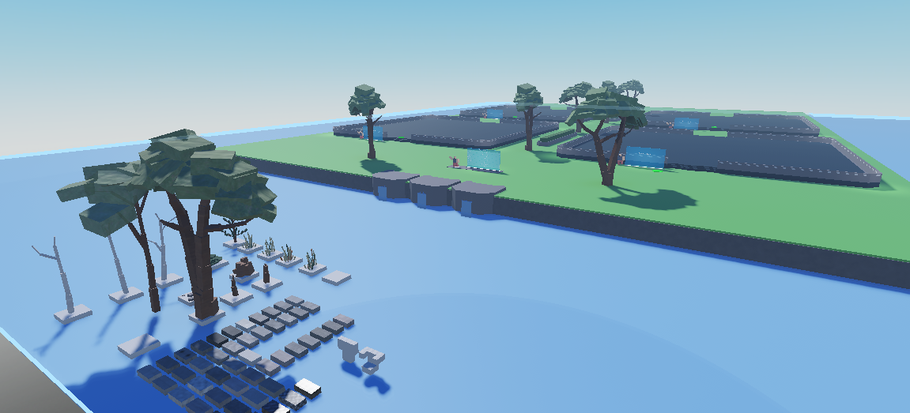

Roblox Minesweeper
WIP: October 2024
I'm absolutely obsessed with Minesweeper, so I wanted to make a unique version of it on Roblox.

I used to play Minesweeper everyday, but when I started this project it made me think of things I never even realized about Minesweeper. For example, clearing all neighboring empty values. Before, I genuinely thought I was just getting lucky when I played, but it was actually just apart of the game's logic.
KEY TAKEAWAYS:
So much! This was truly one of the harder projects I worked on because of my unfamiliarity with game development coupled with Roblox Studio and all the logic & math that follows Minesweeper.
Still a work in progress... I plan to add a reward system, custom flags, different death animations, etc.